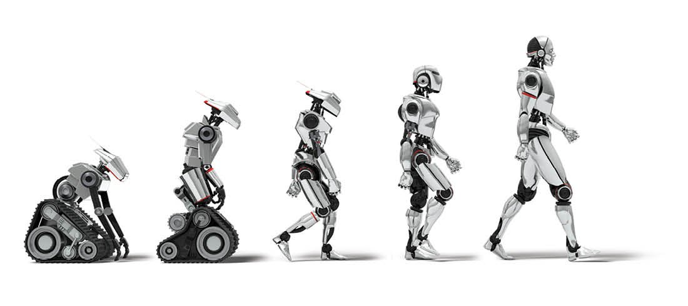

History
In 1942, the science fiction writer Isaac Asimov created his Three Laws of Robotics. In 1948, Norbert Wiener formulated the principles of cybernetics, the basis of practical robotics. Fully autonomous only appeared in the second half of the 20th century. The first digitally operated and programmable robot, the Unimate, was installed in 1961 to lift hot pieces of metal from a die casting machine and stack them. Commercial and industrial robots are widespread today and used to perform jobs more cheaply, more accurately and more reliably, than humans. They are also employed in some jobs which are too dirty, dangerous, or dull to be suitable for humans. Robots are widely used in manufacturing, assembly, packing and packaging, mining, transport, earth and space exploration, surgery, weaponry, laboratory research, safety, and the mass production of consumer and industrial goods
